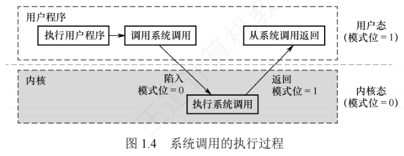

1.3 操作系统的运行环境
1.3.1 操作系统内核
现代操作系统普遍采用分层架构：把与硬件紧密相关的模块（中断处理程序、设备驱动程序）、运行频率高的模块（时钟管理、进程调度）以及各模块共用的基础操作，集中放在紧靠硬件的层次并常驻内存——这组核心组件就是操作系统内核。这样设计有两大目的：一是保护核心模块免遭应用程序破坏，二是提升运行效率。不同系统内核功能有差异，但大多包含以下两类功能。
1. 支撑功能
为操作系统的其他模块提供基础支持，保障系统稳定高效地运行：
- 时钟管理：时钟是计算机系统的关键部件，功能包括计时和产生定时中断。操作系统借助时钟管理向用户提供标准系统时间，并利用时钟中断实现任务调度——分时系统靠它做时间片轮转的进程切换，实时系统按截止时间控制任务执行，批处理系统用它衡量作业运行进度。系统的大量活动都依赖时钟机制。
- 中断机制：中断是现代操作系统运行的基础，它让 CPU 在 I/O 期间可以去执行其他指令，从而提高资源利用率。中断来源广泛：键盘输入、鼠标事件、系统调用、设备驱动、文件访问等。中断发生时，内核负责保存当前进程的现场，把控制权转交相应的处理程序，处理完再恢复现场，有效提升系统的并发处理能力。
- 原语：由若干条指令组成、用于完成特定功能的操作，具有原子性——执行过程不可被中断、必须一气呵成。原语通常运行在内核态，执行时间短、调用频繁，是保证系统安全性和一致性的重要机制，常见的有进程切换、进程同步、资源分配等。为实现原子性，原语常借助关闭中断等手段确保执行不被干扰。
2. 系统资源管理功能
操作系统通过进程控制块、设备控制块、内存分配表、缓冲区等核心数据结构统一管理系统资源，内核需提供三类基本管理功能：
- 进程管理：进程的创建与撤销、状态转换、调度与分派，并维护进程控制块（PCB）等核心数据结构；
- 存储器管理：内存的分配与回收、地址映射、内存保护及页面置换等，保证多道程序安全高效地共享主存；
- 设备管理：设备的分配与回收、缓冲区管理、I/O 调度及设备驱动调用，屏蔽硬件差异，为用户提供统一的设备访问接口。
1.3.2 处理机的双重工作模式
为保证操作系统正确运行，必须严格区分操作系统代码与用户程序的执行环境。绝大多数计算机靠硬件支持实现这一点：为处理机设置至少两种独立的运行模式——用户态（目态）和内核态（管态、系统态），并用一个模式位标识当前状态（如 0 表示内核态、1 表示用户态）。
系统引导时硬件从内核态开始工作，完成操作系统加载后切换到用户态执行用户程序；一旦发生中断或陷阱，硬件就自动从用户态切换到内核态（模式位置 0）。也就是说：操作系统一获得控制权就处于内核态，而在把控制权交还用户程序之前，会切回用户态（模式位置 1）。
双重模式通过对指令分类来提供保护：可能危及系统安全的指令被定义为特权指令，仅允许在内核态执行；其余为非特权指令，可在任意模式下执行。
| 特权指令 | 非特权指令 | |
|---|---|---|
| 执行模式 | 仅内核态 | 用户态、内核态均可 |
| 地址空间 | 可访问全部地址空间（用户空间和系统空间） | 内存访问被限制在用户地址空间 |
| 典型操作 | 启动外设、设置系统时钟、关闭中断、修改模式位或返回用户态等关键操作 | 一般计算和数据处理，不能直接操作硬件或系统核心资源 |
上述限制由硬件强制实施：用户程序试图执行特权指令时，硬件将产生非法指令异常，操作系统捕获后终止该程序并重新调度。
1.3.3 中断和异常的概念
引入双模式后，还要解决两者之间的安全切换问题。系统在内核中设立了若干称为「门」的受控入口，用户程序进入内核态的唯一合法途径就是中断或异常：CPU 运行用户程序时一旦发生中断（如 I/O 完成）或异常（如系统调用、除零错误），硬件自动切换到内核态并跳转到内核中对应的处理程序，这一机制由硬件强制保障、具有安全性与原子性。
中断机制之所以关键，源于操作系统不断提升资源利用率的演进逻辑：某程序因等待 I/O 等事件暂时无法继续时，系统须及时将其挂起、调度其他就绪程序运行；在抢占式多任务系统中，这种调度主要靠中断（尤其是时钟中断）触发。因此，中断机制是现代操作系统实现高效并发与资源共享的基础。
1. 中断和异常的定义
| 中断（外中断） | 异常（内中断） | |
|---|---|---|
| 来源 | CPU 执行指令外部的事件 | CPU 执行指令内部的事件 |
| 典型例子 | 设备发出的 I/O 结束中断（表示设备 I/O 已完成）、时钟中断（固定时间片已到，用于系统计时、进程调度或启动定时任务） | 非法操作码、地址越界、运算溢出、虚存系统的缺页、专门的陷入指令等 |
| 可否屏蔽 | 分可屏蔽中断与不可屏蔽中断 | 一旦发生就必须立即处理，不可屏蔽 |
2. 中断和异常的分类
外中断可分为两类：
- 可屏蔽中断：通过 INTR 线发出的中断请求，通过改变屏蔽字可以实现多重中断，使中断处理更加灵活；
- 不可屏蔽中断：通过 NMI 线发出的中断请求，通常是紧急的硬件故障，如电源掉电等。
异常可分为三类：
- 故障（Fault）：由指令执行引起的异常，如非法操作码、缺页故障、除数为 0、运算溢出等；
- 自陷（Trap，也称陷入）：一种事先安排的「异常」事件，用于在用户态下调用操作系统内核程序，如条件陷阱指令、系统调用指令等；
- 终止（Abort）：出现了使 CPU 无法继续执行的硬件故障，如控制器出错、存储器校验错等。
按来源归类：故障和自陷属于软件中断（程序性异常），终止和外中断属于硬件中断。
3. 中断和异常的处理过程
大致流程：CPU 在执行用户程序的第 i 条指令时，若该指令引发异常（如缺页、除零），或在指令执行结束后检测到中断请求信号，CPU 就打断当前程序，转入相应的中断/异常处理程序执行。若问题可被处理程序解决：
- 对于异常，处理完成后通常返回第 i 条指令重新执行（例如缺页处理完成后要重新访问原来的内存地址）；
- 对于中断，处理完成后返回第 i+1 条指令继续执行。
若处理程序判定是不可恢复的致命错误，则终止该用户程序。通常情况下，中断和异常的具体处理由操作系统（及设备驱动程序）完成。
中断处理与子程序调用的比较（2012 真题），两者形似而神不同：
| 比较项 | 中断处理 | 子程序调用 |
|---|---|---|
| 程序关系 | 中断处理程序与被中断的程序没有固定的主从关系 | 子程序与主程序属于同一程序的主从关系 |
| 发生时机 | 通常是随机的 | 由 CALL 指令显式触发，程序员事先安排 |
| 实现手段 | 需要硬件电路支持才能完成 | 完全由软件实现 |
| 入口地址 | 由中断向量表直接提供 | 由 CALL 指令中的地址码指定 |
| PC 保护 | PC 由硬件在中断响应过程中自动保存 | PC 由 CALL 指令在执行时压入栈中 |
| 优先级裁决 | 需对同时到达的多个中断请求进行优先级裁决 | 不存在此类操作 |
1.3.4 系统调用
系统调用是操作系统提供给应用程序（程序员）使用的接口，可视为一种特殊的公共子程序调用。系统中的各种共享资源均由操作系统统一管理，因此凡涉及共享资源的操作——存储分配、I/O 传输、文件管理等——都必须通过系统调用向操作系统提出服务请求，由操作系统代为完成并返回结果，以此保证系统的稳定性和安全性，防止用户非法操作。一个操作系统提供的系统调用通常有几十条乃至上百条，每个系统调用都有唯一的系统调用号。
1. 系统调用的分类
按功能大致分为五类：
- 设备管理：完成设备的请求或释放、设备启动等；
- 文件管理：完成文件的读、写、创建及删除等；
- 进程控制：完成进程的创建、撤销、阻塞及唤醒等；
- 进程通信：完成进程之间的消息传递或信号传递等；
- 内存管理：完成内存的分配、回收，以及获取作业占用内存区的大小和起始地址等。
2. 系统调用与普通过程调用的区别
系统调用涉及资源管理、进程管理等关键操作，对系统影响极大，因此必须由操作系统内核程序在内核态下完成。它本质上是一种特殊的过程调用，但与普通过程调用有四点显著差异：
| 比较项 | 系统调用 | 普通过程调用 |
|---|---|---|
| 运行状态 | 调用者运行在用户态，被调用者运行在内核态 | 调用者与被调用者运行在同一特权级 |
| 状态转换 | 需通过陷入指令（Trap）触发，先从用户态切换到内核态，再由内核分派至相应处理程序 | 无须特权级切换，可直接跳转 |
| 返回机制 | 执行完毕后，内核可能根据调度策略决定是否切换进程 | 总是直接返回原调用点 |
| 嵌套限制 | 嵌套深度受内核栈空间限制 | 嵌套深度通常仅受用户栈大小约束 |
3. 系统调用的处理过程
系统调用的执行分四个阶段：
- 传递系统调用参数：用户程序把系统调用号及所需参数压入堆栈（或通过寄存器），为内核服务做准备；
- 执行陷入指令并切换至内核态：用户程序执行陷入指令，触发 CPU 从用户态切到内核态，硬件与内核协同保存现场，把 PC、PSW 及通用寄存器内容压入内核堆栈；
- 定位并执行相应服务程序：内核根据系统调用号查询系统调用表，找到对应处理程序的入口地址并执行具体服务逻辑；
- 恢复现场并返回用户态：服务完成后，内核恢复被中断进程的 CPU 现场，把运行模式切回用户态，将控制权交还用户程序，从断点继续执行。

整个过程中，用户程序通过执行陷入指令主动把 CPU 控制权移交内核，内核完成请求后再把控制权交还——用户程序无法直接执行高危操作，必须经受控接口请求操作系统代为执行，这正是系统安全与稳定的保障。由此可以概括操作系统的运行环境：用户程序运行在受限的用户态，通过系统调用（主动）或异常/中断（被动）两种受控途径进入内核态；内核处理完毕后安全返回用户态。用户态与内核态的隔离构成了现代操作系统安全、高效运行的基础环境。
4. 用户态转向内核态的典型情形
- 用户程序请求操作系统服务（系统调用）；
- 发生外中断（如 I/O 完成、时钟信号）；
- 用户程序执行过程中产生异常（如除零、缺页）；
- 用户程序试图执行特权指令，从而触发异常。
从内核态返回用户态则由内核通过特定的返回指令（如 IRET）完成，该操作在内核态执行。